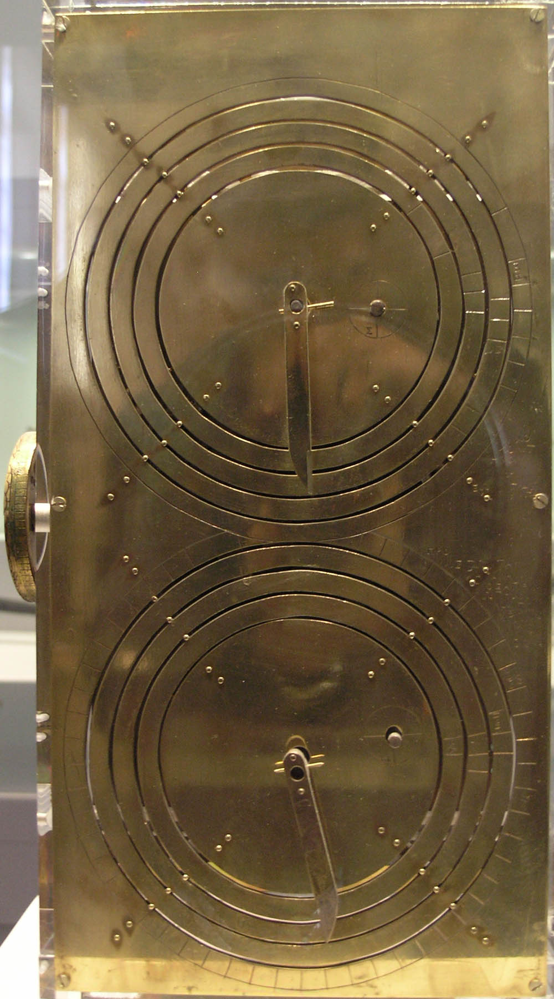
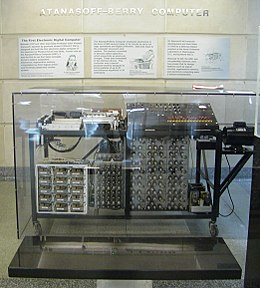
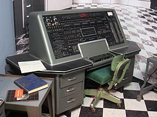

La storia dei computer
iniziamo la scoperta dei computer con la più antica forma di calcolaotore ovvero la macchina di Anticitera

Una ricostruzione della macchina di Anticitera (circa 150-100 a.C.), il più antico calcolatore meccanico
conosciuto. Era in grado di calcolare la posizione dei corpi celesti.
la macchina di Aticitera era quindi una delle prime forme di calcolatore
infatti è al limite della definizione di computer, passiamo ora a qualcosa di più attuale. l' Atanasoff-Berry_Computer (1939)

Atanasoff-Berry_Computer o ABC è stato il primo computer digitale totalmente elettronico;
rappresenta uno dei maggiori passi avanti della storia dei calcolatori.
parliamo ora del primo computer commerciale ovvero l'UNIVAC I (UNIVersal Automatic Computer I)1951

L'UNIVAC (UNIVersal Automatic Computer) è stato il primo computer commerciale creato negli Stati Uniti.
contattatemi qui: